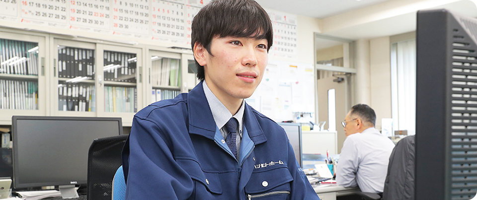

- 現在の業務内容
デスクから現場まで見守るやりがい
- 現在の仕事内容は、お客様の要望に応えた図面をCADで製作する以外に、現場管理補佐を行っています。自分が描いた図面が一日一日とカタチになっていく様子を見るのはこの上ない喜びです。
また、住宅はお客様の人生最大の買物です。その沢山の夢を実際に完成まで見守れることは求めていたやりがいそのもので、毎日が充実しています。
佐藤 純
設計工事職
青森県出身で、大学では工学部で建築工学を専攻していました。
休日には大学時代に始めた趣味の渓流釣りを楽しんでいます。また、資格の勉強に励んでいます。
-
-
- 入社を決めた理由
お客様の顔を見て…物づくりの喜び
- 大学で土木建築を学び、新卒で就職しました。大学の同期は大規模工事に携わる就職がメインでしたが、私は「使う人の顔が見える仕事がしたい」と思い、住宅メーカーに就職を決めました。
-

- 仕事のやりがい
営業とも円滑な連携
- 住宅を知る営業が多いので、現場に無理難題が下りてくることもなく、スムーズな連携がとれています。このように、ハシモトホームは、一人のお客様に対し、一人の営業と設計がしっかりコミュニケーションが取れていることがお客様の満足度調査でも評価していただいていますね。
-
- 将来の夢
今後はより広い裁量を目指して
- 思い出深い仕事として、住宅展示場を作ったことがあります。魅力的で夢があふれる住宅を設計し、それが完成した感動は大きかったです。その感動を日々完成していく住宅現場でも感じることができ、やりがいは大きいです。今後は現場管理を一任してもらえることを目指し、二級建築士の資格からのさらなる飛躍へ向けて頑張っていきます。
若林 五郎
不動産開発課 不動産職
生活に不可欠なものの代名詞として、「衣食住」という言葉があります。その中でも、着る・食べるための「場所」を提供する住は特別な存在に携わっていることに誇りをもってます。

-
- 現在の業務内容
幅広い仕事内容で活躍
- 現在の仕事内容は、土地建物の仕入れ、売買、仲介の他、中古住宅の販売と多岐に渡ります。私は現在ひとりで行っていますが、個人の裁量をしっかり見極めて適材適所に配置をしてくれるので、無理がかかることはありません。個人個人をちゃんと見てくれているので、結果が評価につながることが大きなやりがいです。
-
- 入社を決めた理由
会長の理念に惹かれ転職
- 前職も不動産職で宅建と行政書士を保有しています。転職を決めた理由は、あるきっかけで橋本会長と話をする機会があり、社員想いの理念と、知名度からのやりがいの大きさに惹かれ決断しました。
転職後も、その魅力に間違いはなかったと思っています。
-

- 仕事のやりがい
未経験でも安心してチャレンジを
- 不動産営業というと体育会系なイメージがありますが、ハシモトホームは無理難題を押し付けることなく、能力に応じた教育や配置を行っています。社員ファーストの社風がちゃんと活きているので、未経験者でもやる気次第でいくらでもステップアップが可能です。
-
- 将来の夢
新築物件と中古物件の違いと今後
- 注文からスタートする新築と違い、中古物件の売買は時に長期化することがあります。また、私の仕事は土地の利を考えるなど、広い視野で物事を考えることが求められます。
全ては経験とも言えますが、初めての人には先輩社員がしっかりとサポートするので安心してください。

大塚 奈央美
デジタルマーケティング課
八戸出身で、大学ではパッケージやチラシ、住環境など様々なデザインの勉強をしてきました。モノづくりが大好きで休日は写真を撮ったり、カフェにiPadを持ち寄ってゆったりと絵を描いたりしています。
-
- 現在の業務内容
大学での経験が役立つ広報の現場
- 仕事はホームページ更新以外に、ポスティングチラシ作成などで大学での知識を生かせています。最初は不安がありましたが、先輩のアドバイスや経験を積んで、徐々にスムーズにこなせるようになったと思っています。よく考え込んでしまう性格なので、今後はよりスムーズに仕事を進めていくことが目標ですね。
-
- 入社を決めた理由
インテリアへの関心からの就職
- 大学でデザインを学び、インテリアコーディネートに興味があり、住宅メーカーもいいのでは？と考え、地元でも大手のハシモトホームに就職しました。
現在先輩社員と3名の部署で仕事をしています。
-
- 仕事のやりがい
文章能力を鍛えてステップアップ
- ホームページに掲載している施工事例の写真に、空間の特徴についてコメントするコーナーがあるのですが、「より伝わりやすいキャッチコピー」「会社の強みを明快に伝える」ことが現在のテーマです。毎日の生活の中で目にする広告やCMなど、全てが教材です。時代に敏感であることが大きなやりがいとなっています。
-
- 将来の夢
人と人との繋がりに喜びを感じる人
- ずばり、明るく元気な人ですね。お客様とのコミュニケーションを非常に重視しているため、自然と社風も明るく風通しがよくなっていると思います。私も、他部署の先輩に気軽に声をかけてもらえることが多く、結果として全員の仕事のしやすさに繋がっていると思います。
前田 一行
住宅販売課 営業
青森県五戸町出身で、大学では体育学部スポーツトレーナー学科を卒業。小学生の頃からずっとサッカーをやっていて、休日は子どもたちに指導をして楽しんでいます。
-
- 現在の業務内容
初の営業職でも安心の教育体系
- 不動産、営業共に未経験でしたので、最初は覚えることがたくさんありましたが、先輩社員がついたOJTの元、丁寧に教えてもらい、また自分でも積極的に質問を重ねたり、調べながら知識を身につけていきました。
社員想いの社風が教育にも生きているので、私のような未経験の方もぜひチャレンジしてほしいと思います。
-
- 入社を決めた理由
コミュ力を生かし、新天地での転職
- 前職は仙台で子ども達への運動指導の仕事をしていました。地元青森にUターンするにあたり転職活動で重視した点は「人と接する仕事」でした。
そんな中、ハシモトホームの求人を見つけ応募しました。決め手は営業職というコミュニケーションが大切な職種であること、そして抜群の知名度と実績でしたね。
-
- 仕事のやりがい
コミュニケーションが生み出す感動
- 仕事には大変やりがいを感じています。営業職として新築物件を扱っているのですが、「お客さまとの交渉、相談」「設計との連携」といった、私が求めていたコミュニケーション力が存分に生かせています。そして時に一年以上かけて住宅引き渡しとなった際の「イチからものづくりに関わった感動」はひとしおですよ。
-
- 将来の夢
業界屈指の提案力と風通しの良い職場
- 営業しやすい点としては、競合他社が多い業界でありながら、実績の多さを強みにした提案材料の多さがあります。フルオーダー、セミオーダー問わず、お客様の求める住宅イメージを即座に提案できます。明るく風通しがいい社風なので、他部署との連携がスムーズにとりやすく、非常に仕事のしやすい環境です。